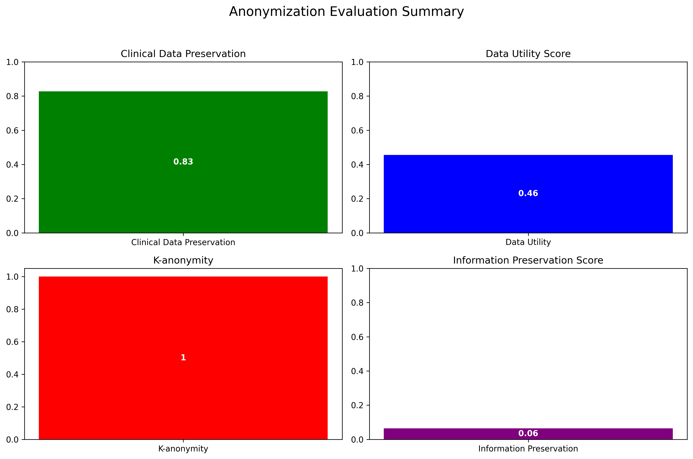

Visualizations
Summary Metrics
Top 10 Best Preserved Clinical Data Columns

Data Utility by Column

Top 10 Columns with Highest Information Preservation

This score indicates how well the clinical data has been preserved during anonymization. A higher score means better preservation.
This score measures how useful the anonymized data remains for analysis. Higher scores indicate better utility preservation.
K-anonymity measures privacy protection. A value of k means each record is indistinguishable from at least k-1 other records. Higher values provide better privacy.
This score indicates how much of the original information content is preserved in the anonymized data. Higher scores mean better information preservation.
Based on the evaluation results, the anonymization process has achieved:
Recommendations: